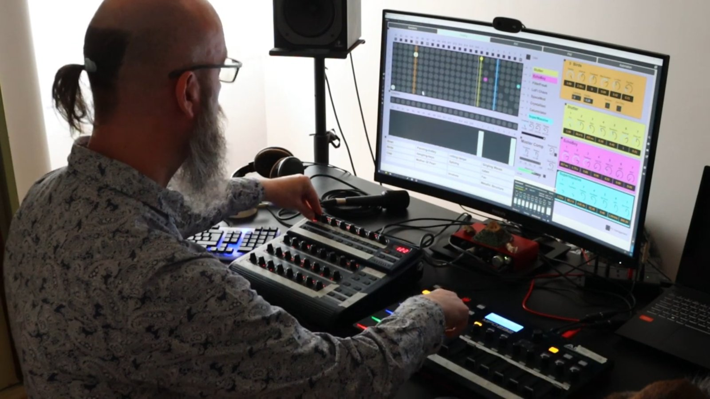

Un humain de l'à-peu-près
J'ai compris assez tôt que je n'étais pas fait pour la guitare classique. L'instrument réclame une précision du millimètre et de la milliseconde, obtenue par des milliers de répétitions du même morceau. Or j'ai une dextérité moyenne, et la discipline de la répétition dépasse les capacités de mon esprit vagabond. Je suis gaucher et un peu maladroit : deux mains gauches, au sens propre comme au figuré. Ajoutez à cela une allergie tenace à refaire vingt fois le même geste, et vous obtenez quelqu'un que la méthode classique décourage vite.
J'aurais pu m'obstiner, me conformer à l'instrument comme on m'y invitait. J'ai fait le choix inverse : concevoir un instrument qui compose avec mon imprécision. Les Anglo-Saxons ont un mot pour cette qualité d'à-peu-près, « fuzzy », le flou, l'approximatif. J'y tiens, parce qu'il nomme une donnée de départ. Mon imprécision n'est pas un défaut à corriger. C'est une caractéristique avec laquelle il faut travailler, comme un menuisier travaille avec le fil du bois.
Le résultat s'appelle le Chaos Conductor. C'est un instrument de musique électronique que je joue en direct, à partir de sons concrets : des bruits du monde, enregistrés puis rejoués et transformés sur scène. Voilà deux ans que je m'en sers, en solo et en groupe.
Régler des conditions, laisser la machine trancher
Sur un instrument ordinaire, chaque geste produit directement un son. Je pince une corde, la note sonne. J'appuie sur une touche, elle résonne. Ce lien direct entre le geste et le son est ce que les ingénieurs appellent un contrôle de premier ordre. Il est merveilleux de précision, et c'est justement là qu'il me perd : il exige que ma main tombe au bon endroit à la bonne milliseconde, des milliers de fois.
Le Chaos Conductor procède autrement. Je ne déclenche aucun son à la main. Je règle des conditions. Je fixe par exemple une densité d'événements, une probabilité qu'un son survienne, et c'est la machine qui décide de l'instant exact où chaque son surgit. Un potentiomètre commande la fréquence à laquelle les sons se déclenchent, du silence complet jusqu'à une averse serrée. Je tourne ce bouton et je remodèle un rythme que je ne peux ni contrôler dans le détail, ni rater. Je façonne le comportement du son ; la machine tranche le « quand ».
En termes techniques, c'est un contrôle de second ordre : j'agis sur les conditions dans lesquelles le système fonctionne. Cette petite distance entre mon geste et le son lisse mes approximations. Là où une main hésitante produirait une fausse note, elle ne produit ici qu'une densité légèrement différente. L'erreur, tout simplement, n'existe plus sous la forme qui me terrifiait.

Un chef qui ne tient pas de partition
Le déclic est venu d'un concert. J'ai vu Rob Mazurek diriger l'Exploding Star Orchestra, un ensemble de la scène de Chicago rompu à l'improvisation libre. Mazurek ne battait pas la mesure d'une partition écrite. Il mettait en forme, par des gestes, la musique inédite qui émergeait du jeu collectif. Il posait un cadre et déléguait l'exécution aux musiciens.
C'est exactement le rapport que j'entretiens avec mes machines. Le nom de l'instrument vient de là. Là où Mazurek s'adresse à des musiciens, je m'adresse à des logiciels qui produisent des sons. Je pose des conditions, je délègue l'exécution, je façonne le champ des possibles d'où les sons finissent par jaillir. Un instrument classique parle à la première personne : je pince, je souffle. À l'autre extrémité, certains programmes musicaux autonomes jouent tout seuls, à la troisième personne : ils écoutent, décident, jouent, et l'humain n'est plus qu'un partenaire ou un témoin. Le Chaos Conductor se tient à la deuxième personne. Je m'adresse à la machine, je lui indique une direction, elle répond à sa manière.
Barreiro, ses coquillages et son ponton
Tout cela reste abstrait tant qu'on n'a pas entendu de quoi c'est fait. Prenons un projet concret : Barreiro Improvised, retenu pour la bourse de création OUT.RA en 2024. Barreiro est une ville industrielle de l'autre côté du Tage, face à Lisbonne. J'ai construit une série de performances à partir de ses sons, enregistrés sur le terrain, complétés par une archive sonore locale. Sur scène, j'étais accompagné de Bruno Afonso à la batterie et de Sara Zita Correia, à la batterie, à la voix et aux objets sonores. Le concert, capté après une semaine de résidence à l'auditorium AMAC de Barreiro, est en ligne.
Chaque son doit être préparé pour entrer dans la logique de l'instrument, où il sera répété à des intervalles imprévisibles et superposé à d'autres. Des couteaux raclant des coquillages, lors d'une pêche collective à marée basse, sont devenus de courts éléments percussifs, faits pour dialoguer avec la batterie. Les grincements et les cliquetis d'un ponton métallique, à l'embarcadère du ferry, sont restés de longs événements à la structure marquée, occupant le premier plan. Les braises crépitantes d'un barbecue de sardines ont été lissées en une nappe d'arrière-plan.
Le geste artistique se loge dans ces choix, et dans les effets que j'applique. Je joue sur la tension entre le son brut et le son traité : un bitcrush fait ressortir la texture granulaire des braises, un delay rend les raclements de couteau plus organiques, un filtre passe-bande résonant accentue le caractère écrasant du ponton.
Le plus beau se produit dans le jeu à plusieurs. Pour l'ouverture de la seconde partie, nous avons découvert que le batteur pouvait faire résonner un gong. Je rééchantillonnais cette résonance en direct, je la mettais en boucle, et elle devenait le fond sonore d'une bonne partie du set. Il devait savoir que l'instrument était capable de cela, afin de jouer réellement avec lui.
« Je dois être plus attentif aux sons, à ce que Jean-Philippe enregistre pendant que je joue et qu'il rejoue ensuite tout au long du set. J'ai appris à écouter et à respecter les silences. »
— Bruno Afonso
Il entend sa propre batterie lui revenir, transformée, redistribuée. Il écoute et répond à une matière qui est en partie la sienne.
Le prix à payer
Cet arrangement a un coût. En déléguant l'instant précis à la machine, je perds une part du geste, ce contact direct entre la main et le son que connaît tout instrumentiste. Certains musiciens vivent de l'adrénaline de traverser une pièce sur un fil ; mon instrument est conçu sans ce tranchant, parce que je n'en voulais pas. C'est un choix, avec sa contrepartie.
La limite la plus nette est ailleurs. La musique est un art du temps, et l'une de ses forces est la mémoire : un motif qui revient, une phrase qu'on reconnaît, ancrent l'auditeur et donnent sa forme à une pièce. Or chaque son du Chaos Conductor se déclenche dans son propre coin, sans lien avec les autres. L'instrument sait dire où il se trouve dans l'espace sonore ; il peine à dire comment il le traverse. Il manipule des états, des noms en quelque sorte, la densité, la fréquence, le gain. Il lui manque les verbes : se souvenir, développer, construire une structure. En solo, mes premières vidéos me donnent aujourd'hui l'impression de juxtaposer des sons sans but. Le jeu en groupe atténue ce manque, car les autres musiciens apportent la structure que l'instrument n'a pas. C'est le chantier ouvert, celui auquel je travaille.
Retrouver la scène
L'essentiel, pour moi, tient en une phrase : je suis remonté sur scène. Reculer du contrôle de chaque note vers le réglage des conditions a supprimé l'angoisse que j'y associais. Entendre le paysage sonore évoluer sous mes doigts et ajuster les densités me paraît plus musical que jouer de la guitare, parce que je travaille enfin avec mon à-peu-près au lieu de lutter contre lui. Mon esprit vagabond y trouve son compte : curieux d'une région de l'espace sonore, je peux l'explorer sur-le-champ, sans avoir à répéter mon chemin pour y arriver, et repartir ailleurs dès que l'envie me prend. J'ai construit un instrument qui reflète mon esprit et mon geste, et qui, par ricochet, invite mon public et ceux qui jouent avec moi à écouter autrement.